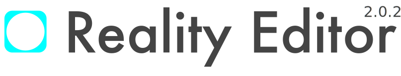

-

The Reality Editor is partially based on research conducted in the MIT Media Lab and contributions of the reality editor and open hybrid community. The Reality Editor Graphical User Interface code is written in Javascript and its source code is available under: https://github.com/realityeditor/userinterface. The Media Lab, reality editor and openhybrid community is providing constant feedback and improvements.
Acknowledgments
Core Team
Valentin Heun, Benjamin F Reynolds, James Hobin
Significant Contributor
Kevin Wong, Michelle Suh, Carsten Strunk, Shunichi Kasahara, Mohammed Ibrahim
Scientific Support
Prof. Pattie Maes, Prof. Hiroshi Ishii, Prof. Mitchel Resnick, Prof. Joi Ito
3rd Party License
reality editor - userinterface / open hybrid - editor
Mozilla Public License, version 2.0
1. Definitions
1.1. "Contributor"
means each individual or legal entity that creates, contributes to the creation of, or owns Covered Software.
1.2. "Contributor Version"
means the combination of the Contributions of others (if any) used by a Contributor and that particular Contributor's Contribution.
1.3. "Contribution"
means Covered Software of a particular Contributor.
1.4. "Covered Software"
means Source Code Form to which the initial Contributor has attached the notice in Exhibit A, the Executable Form of such Source Code Form, and Modifications of such Source Code Form, in each case including portions thereof.
1.5. "Incompatible With Secondary Licenses"
means
a. that the initial Contributor has attached the notice described in Exhibit B to the Covered Software; or
b. that the Covered Software was made available under the terms of version 1.1 or earlier of the License, but not also under the terms of a Secondary License.
1.6. "Executable Form"
means any form of the work other than Source Code Form.
1.7. "Larger Work"
means a work that combines Covered Software with other material, in a separate file or files, that is not Covered Software.
1.8. "License"
means this document.
1.9. "Licensable"
means having the right to grant, to the maximum extent possible, whether at the time of the initial grant or subsequently, any and all of the rights conveyed by this License.
1.10. "Modifications"
means any of the following:
a. any file in Source Code Form that results from an addition to, deletion from, or modification of the contents of Covered Software; or
b. any new file in Source Code Form that contains any Covered Software.
1.11. "Patent Claims" of a Contributor
means any patent claim(s), including without limitation, method, process, and apparatus claims, in any patent Licensable by such Contributor that would be infringed, but for the grant of the License, by the making, using, selling, offering for sale, having made, import, or transfer of either its Contributions or its Contributor Version.
1.12. "Secondary License"
means either the GNU General Public License, Version 2.0, the GNU Lesser General Public License, Version 2.1, the GNU Affero General Public License, Version 3.0, or any later versions of those licenses.
1.13. "Source Code Form"
means the form of the work preferred for making modifications.
1.14. "You" (or "Your")
means an individual or a legal entity exercising rights under this License. For legal entities, "You" includes any entity that controls, is controlled by, or is under common control with You. For purposes of this definition, "control" means (a) the power, direct or indirect, to cause the direction or management of such entity, whether by contract or otherwise, or (b) ownership of more than fifty percent (50%) of the outstanding shares or beneficial ownership of such entity.
2. License Grants and Conditions
2.1. Grants
Each Contributor hereby grants You a world-wide, royalty-free, non-exclusive license:
a. under intellectual property rights (other than patent or trademark) Licensable by such Contributor to use, reproduce, make available, modify, display, perform, distribute, and otherwise exploit its Contributions, either on an unmodified basis, with Modifications, or as part of a Larger Work; and
b. under Patent Claims of such Contributor to make, use, sell, offer for sale, have made, import, and otherwise transfer either its Contributions or its Contributor Version.
2.2. Effective Date
The licenses granted in Section 2.1 with respect to any Contribution become effective for each Contribution on the date the Contributor first distributes such Contribution.
2.3. Limitations on Grant Scope
The licenses granted in this Section 2 are the only rights granted under this License. No additional rights or licenses will be implied from the distribution or licensing of Covered Software under this License. Notwithstanding Section 2.1(b) above, no patent license is granted by a Contributor:
a. for any code that a Contributor has removed from Covered Software; or
b. for infringements caused by: (i) Your and any other third party's modifications of Covered Software, or (ii) the combination of its Contributions with other software (except as part of its Contributor Version); or
c. under Patent Claims infringed by Covered Software in the absence of its Contributions.
This License does not grant any rights in the trademarks, service marks, or logos of any Contributor (except as may be necessary to comply with the notice requirements in Section 3.4).
2.4. Subsequent Licenses
No Contributor makes additional grants as a result of Your choice to distribute the Covered Software under a subsequent version of this License (see Section 10.2) or under the terms of a Secondary License (if permitted under the terms of Section 3.3).
2.5. Representation
Each Contributor represents that the Contributor believes its Contributions are its original creation(s) or it has sufficient rights to grant the rights to its Contributions conveyed by this License.
2.6. Fair Use
This License is not intended to limit any rights You have under applicable copyright doctrines of fair use, fair dealing, or other equivalents.
2.7. Conditions
Sections 3.1, 3.2, 3.3, and 3.4 are conditions of the licenses granted in Section 2.1.
3. Responsibilities
3.1. Distribution of Source Form
All distribution of Covered Software in Source Code Form, including any Modifications that You create or to which You contribute, must be under the terms of this License. You must inform recipients that the Source Code Form of the Covered Software is governed by the terms of this License, and how they can obtain a copy of this License. You may not attempt to alter or restrict the recipients' rights in the Source Code Form.
3.2. Distribution of Executable Form
If You distribute Covered Software in Executable Form then:
a. such Covered Software must also be made available in Source Code Form, as described in Section 3.1, and You must inform recipients of the Executable Form how they can obtain a copy of such Source Code Form by reasonable means in a timely manner, at a charge no more than the cost of distribution to the recipient; and
b. You may distribute such Executable Form under the terms of this License, or sublicense it under different terms, provided that the license for the Executable Form does not attempt to limit or alter the recipients' rights in the Source Code Form under this License.
3.3. Distribution of a Larger Work
You may create and distribute a Larger Work under terms of Your choice, provided that You also comply with the requirements of this License for the Covered Software. If the Larger Work is a combination of Covered Software with a work governed by one or more Secondary Licenses, and the Covered Software is not Incompatible With Secondary Licenses, this License permits You to additionally distribute such Covered Software under the terms of such Secondary License(s), so that the recipient of the Larger Work may, at their option, further distribute the Covered Software under the terms of either this License or such Secondary License(s).
3.4. Notices
You may not remove or alter the substance of any license notices (including copyright notices, patent notices, disclaimers of warranty, or limitations of liability) contained within the Source Code Form of the Covered Software, except that You may alter any license notices to the extent required to remedy known factual inaccuracies.
3.5. Application of Additional Terms
You may choose to offer, and to charge a fee for, warranty, support, indemnity or liability obligations to one or more recipients of Covered Software. However, You may do so only on Your own behalf, and not on behalf of any Contributor. You must make it absolutely clear that any such warranty, support, indemnity, or liability obligation is offered by You alone, and You hereby agree to indemnify every Contributor for any liability incurred by such Contributor as a result of warranty, support, indemnity or liability terms You offer. You may include additional disclaimers of warranty and limitations of liability specific to any jurisdiction.
4. Inability to Comply Due to Statute or Regulation
If it is impossible for You to comply with any of the terms of this License with respect to some or all of the Covered Software due to statute, judicial order, or regulation then You must: (a) comply with the terms of this License to the maximum extent possible; and (b) describe the limitations and the code they affect. Such description must be placed in a text file included with all distributions of the Covered Software under this License. Except to the extent prohibited by statute or regulation, such description must be sufficiently detailed for a recipient of ordinary skill to be able to understand it.
5. Termination
5.1. The rights granted under this License will terminate automatically if You fail to comply with any of its terms. However, if You become compliant, then the rights granted under this License from a particular Contributor are reinstated (a) provisionally, unless and until such Contributor explicitly and finally terminates Your grants, and (b) on an ongoing basis, if such Contributor fails to notify You of the non-compliance by some reasonable means prior to 60 days after You have come back into compliance. Moreover, Your grants from a particular Contributor are reinstated on an ongoing basis if such Contributor notifies You of the non-compliance by some reasonable means, this is the first time You have received notice of non-compliance with this License from such Contributor, and You become compliant prior to 30 days after Your receipt of the notice.
5.2. If You initiate litigation against any entity by asserting a patent infringement claim (excluding declaratory judgment actions, counter-claims, and cross-claims) alleging that a Contributor Version directly or indirectly infringes any patent, then the rights granted to You by any and all Contributors for the Covered Software under Section 2.1 of this License shall terminate.
5.3. In the event of termination under Sections 5.1 or 5.2 above, all end user license agreements (excluding distributors and resellers) which have been validly granted by You or Your distributors under this License prior to termination shall survive termination.
6. Disclaimer of Warranty
Covered Software is provided under this License on an "as is" basis, without warranty of any kind, either expressed, implied, or statutory, including, without limitation, warranties that the Covered Software is free of defects, merchantable, fit for a particular purpose or non-infringing. The entire risk as to the quality and performance of the Covered Software is with You. Should any Covered Software prove defective in any respect, You (not any Contributor) assume the cost of any necessary servicing, repair, or correction. This disclaimer of warranty constitutes an essential part of this License. No use of any Covered Software is authorized under this License except under this disclaimer.
7. Limitation of Liability
Under no circumstances and under no legal theory, whether tort (including negligence), contract, or otherwise, shall any Contributor, or anyone who distributes Covered Software as permitted above, be liable to You for any direct, indirect, special, incidental, or consequential damages of any character including, without limitation, damages for lost profits, loss of goodwill, work stoppage, computer failure or malfunction, or any and all other commercial damages or losses, even if such party shall have been informed of the possibility of such damages. This limitation of liability shall not apply to liability for death or personal injury resulting from such party's negligence to the extent applicable law prohibits such limitation. Some jurisdictions do not allow the exclusion or limitation of incidental or consequential damages, so this exclusion and limitation may not apply to You.
8. Litigation
Any litigation relating to this License may be brought only in the courts of a jurisdiction where the defendant maintains its principal place of business and such litigation shall be governed by laws of that jurisdiction, without reference to its conflict-of-law provisions. Nothing in this Section shall prevent a party's ability to bring cross-claims or counter-claims.
9. Miscellaneous
This License represents the complete agreement concerning the subject matter hereof. If any provision of this License is held to be unenforceable, such provision shall be reformed only to the extent necessary to make it enforceable. Any law or regulation which provides that the language of a contract shall be construed against the drafter shall not be used to construe this License against a Contributor.
10. Versions of the License
10.1. New Versions
Mozilla Foundation is the license steward. Except as provided in Section 10.3, no one other than the license steward has the right to modify or publish new versions of this License. Each version will be given a distinguishing version number.
10.2. Effect of New Versions
You may distribute the Covered Software under the terms of the version of the License under which You originally received the Covered Software, or under the terms of any subsequent version published by the license steward.
10.3. Modified Versions
If you create software not governed by this License, and you want to create a new license for such software, you may create and use a modified version of this License if you rename the license and remove any references to the name of the license steward (except to note that such modified license differs from this License).
10.4. Distributing Source Code Form that is Incompatible With Secondary Licenses If You choose to distribute Source Code Form that is Incompatible With Secondary Licenses under the terms of this version of the License, the notice described in Exhibit B of this License must be attached.
Exhibit A - Source Code Form License Notice
This Source Code Form is subject to the terms of the Mozilla Public License, v. 2.0. If a copy of the MPL was not distributed with this file, You can obtain one at http://mozilla.org/MPL/2.0/.
If it is not possible or desirable to put the notice in a particular file, then You may include the notice in a location (such as a LICENSE file in a relevant directory) where a recipient would be likely to look for such a notice.
You may add additional accurate notices of copyright ownership.
Exhibit B - "Incompatible With Secondary Licenses" Notice
This Source Code Form is "Incompatible With Secondary Licenses", as defined by the Mozilla Public License, v. 2.0.
ratchet
The MIT License (MIT)
Copyright (c) 2015 connors and other contributors
Permission is hereby granted, free of charge, to any person obtaining a copy of this software and associated documentation files (the "Software"), to deal in the Software without restriction, including without limitation the rights to use, copy, modify, merge, publish, distribute, sublicense, and/or sell copies of the Software, and to permit persons to whom the Software is furnished to do so, subject to the following conditions:
The above copyright notice and this permission notice shall be included in all copies or substantial portions of the Software.
THE SOFTWARE IS PROVIDED "AS IS", WITHOUT WARRANTY OF ANY KIND, EXPRESS OR IMPLIED, INCLUDING BUT NOT LIMITED TO THE WARRANTIES OF MERCHANTABILITY, FITNESS FOR A PARTICULAR PURPOSE AND NONINFRINGEMENT. IN NO EVENT SHALL THE AUTHORS OR COPYRIGHT HOLDERS BE LIABLE FOR ANY CLAIM, DAMAGES OR OTHER LIABILITY, WHETHER IN AN ACTION OF CONTRACT, TORT OR OTHERWISE, ARISING FROM, OUT OF OR IN CONNECTION WITH THE SOFTWARE OR THE USE OR OTHER DEALINGS IN THE SOFTWARE.
open frameworks
Copyright (c) 2004 - openFrameworks Community
Permission is hereby granted, free of charge, to any person obtaining a copy of this software and associated documentation files (the "Software"), to deal in the Software without restriction, including without limitation the rights to use, copy, modify, merge, publish, distribute, sublicense, and/or sell copies of the Software, and to permit persons to whom the Software is furnished to do so, subject to the following conditions:
The above copyright notice and this permission notice shall be included in all copies or substantial portions of the Software.
THE SOFTWARE IS PROVIDED "AS IS", WITHOUT WARRANTY OF ANY KIND, EXPRESS OR IMPLIED, INCLUDING BUT NOT LIMITED TO THE WARRANTIES OF MERCHANTABILITY, FITNESS FOR A PARTICULAR PURPOSE AND NONINFRINGEMENT. IN NO EVENT SHALL THE AUTHORS OR COPYRIGHT HOLDERS BE LIABLE FOR ANY CLAIM, DAMAGES OR OTHER LIABILITY, WHETHER IN AN ACTION OF CONTRACT, TORT OR OTHERWISE, ARISING FROM, OUT OF OR IN CONNECTION WITH THE SOFTWARE OR THE USE OR OTHER DEALINGS IN THE SOFTWARE.
PEP
Copyright jQuery Foundation and other contributors, https://jquery.org/
This software consists of voluntary contributions made by many individuals. For exact contribution history, see the revision history available at https://github.com/jquery/PEP
The following license applies to all parts of this software except as documented below:
====
Permission is hereby granted, free of charge, to any person obtaining a copy of this software and associated documentation files (the "Software"), to deal in the Software without restriction, including without limitation the rights to use, copy, modify, merge, publish, distribute, sublicense, and/or sell copies of the Software, and to permit persons to whom the Software is furnished to do so, subject to the following conditions:
The above copyright notice and this permission notice shall be included in all copies or substantial portions of the Software.
THE SOFTWARE IS PROVIDED "AS IS", WITHOUT WARRANTY OF ANY KIND, EXPRESS OR IMPLIED, INCLUDING BUT NOT LIMITED TO THE WARRANTIES OF MERCHANTABILITY, FITNESS FOR A PARTICULAR PURPOSE AND NONINFRINGEMENT. IN NO EVENT SHALL THE AUTHORS OR COPYRIGHT HOLDERS BE LIABLE FOR ANY CLAIM, DAMAGES OR OTHER LIABILITY, WHETHER IN AN ACTION OF CONTRACT, TORT OR OTHERWISE, ARISING FROM, OUT OF OR IN CONNECTION WITH THE SOFTWARE OR THE USE OR OTHER DEALINGS IN THE SOFTWARE.
====
Copyright and related rights for sample code are waived via CC0. Sample code is defined as all source code contained within the samples directory.
CC0: http://creativecommons.org/publicdomain/zero/1.0/
====
All files located in the node_modules directory are externally maintained libraries used by this software which have their own licenses; we recommend you read them, as their terms may differ from the terms above.
D3
Copyright 2010-2016 Mike Bostock All rights reserved.
Redistribution and use in source and binary forms, with or without modification, are permitted provided that the following conditions are met:
* Redistributions of source code must retain the above copyright notice, this list of conditions and the following disclaimer.
* Redistributions in binary form must reproduce the above copyright notice, this list of conditions and the following disclaimer in the documentation and/or other materials provided with the distribution.
* Neither the name of the author nor the names of contributors may be used to endorse or promote products derived from this software without specific prior written permission.
THIS SOFTWARE IS PROVIDED BY THE COPYRIGHT HOLDERS AND CONTRIBUTORS "AS IS" AND ANY EXPRESS OR IMPLIED WARRANTIES, INCLUDING, BUT NOT LIMITED TO, THE IMPLIED WARRANTIES OF MERCHANTABILITY AND FITNESS FOR A PARTICULAR PURPOSE ARE DISCLAIMED. IN NO EVENT SHALL THE COPYRIGHT OWNER OR CONTRIBUTORS BE LIABLE FOR ANY DIRECT, INDIRECT, INCIDENTAL, SPECIAL, EXEMPLARY, OR CONSEQUENTIAL DAMAGES (INCLUDING, BUT NOT LIMITED TO, PROCUREMENT OF SUBSTITUTE GOODS OR SERVICES; LOSS OF USE, DATA, OR PROFITS; OR BUSINESS INTERRUPTION) HOWEVER CAUSED AND ON ANY THEORY OF LIABILITY, WHETHER IN CONTRACT, STRICT LIABILITY, OR TORT (INCLUDING NEGLIGENCE OR OTHERWISE) ARISING IN ANY WAY OUT OF THE USE OF THIS SOFTWARE, EVEN IF ADVISED OF THE POSSIBILITY OF SUCH DAMAGE.
idb filesystem
Copyright 2012 - Eric Bidelman (ebidel@gmail.com)
Licensed under the Apache License, Version 2.0 (the "License"); you may not use this file except in compliance with the License. You may obtain a copy of the License at
http://www.apache.org/licenses/LICENSE-2.0
Unless required by applicable law or agreed to in writing, software distributed under the License is distributed on an "AS IS" BASIS, WITHOUT WARRANTIES OR CONDITIONS OF ANY KIND, either express or implied. See the License for the specific language governing permissions and limitations under the License.
Polymer
Copyright (c) 2014 The Polymer Authors. All rights reserved.
Redistribution and use in source and binary forms, with or without modification, are permitted provided that the following conditions are met:
* Redistributions of source code must retain the above copyright notice, this list of conditions and the following disclaimer.
* Redistributions in binary form must reproduce the above copyright notice, this list of conditions and the following disclaimer in the documentation and/or other materials provided with the distribution.
* Neither the name of Google Inc. nor the names of its contributors may be used to endorse or promote products derived from this software without specific prior written permission.THIS SOFTWARE IS PROVIDED BY THE COPYRIGHT HOLDERS AND CONTRIBUTORS "AS IS" AND ANY EXPRESS OR IMPLIED WARRANTIES, INCLUDING, BUT NOT LIMITED TO, THE IMPLIED WARRANTIES OF MERCHANTABILITY AND FITNESS FOR A PARTICULAR PURPOSE ARE DISCLAIMED. IN NO EVENT SHALL THE COPYRIGHT OWNER OR CONTRIBUTORS BE LIABLE FOR ANY DIRECT, INDIRECT, INCIDENTAL, SPECIAL, EXEMPLARY, OR CONSEQUENTIAL DAMAGES (INCLUDING, BUT NOT LIMITED TO, PROCUREMENT OF SUBSTITUTE GOODS OR SERVICES; LOSS OF USE, DATA, OR PROFITS; OR BUSINESS INTERRUPTION) HOWEVER CAUSED AND ON ANY THEORY OF LIABILITY, WHETHER IN CONTRACT, STRICT LIABILITY, OR TORT (INCLUDING NEGLIGENCE OR OTHERWISE) ARISING IN ANY WAY OUT OF THE USE OF THIS SOFTWARE, EVEN IF ADVISED OF THE POSSIBILITY OF SUCH DAMAGE.
WebComponents
# License
Everything in this repo is BSD style license unless otherwise specified.
Copyright (c) 2015 The Polymer Authors. All rights reserved.
Redistribution and use in source and binary forms, with or without modification, are permitted provided that the following conditions are met:
* Redistributions of source code must retain the above copyright notice, this list of conditions and the following disclaimer.
* Redistributions in binary form must reproduce the above copyright notice, this list of conditions and the following disclaimer in the documentation and/or other materials provided with the distribution.
* Neither the name of Google Inc. nor the names of its contributors may be used to endorse or promote products derived from this software without specific prior written permission.THIS SOFTWARE IS PROVIDED BY THE COPYRIGHT HOLDERS AND CONTRIBUTORS "AS IS" AND ANY EXPRESS OR IMPLIED WARRANTIES, INCLUDING, BUT NOT LIMITED TO, THE IMPLIED WARRANTIES OF MERCHANTABILITY AND FITNESS FOR A PARTICULAR PURPOSE ARE DISCLAIMED. IN NO EVENT SHALL THE COPYRIGHT OWNER OR CONTRIBUTORS BE LIABLE FOR ANY DIRECT, INDIRECT, INCIDENTAL, SPECIAL, EXEMPLARY, OR CONSEQUENTIAL DAMAGES (INCLUDING, BUT NOT LIMITED TO, PROCUREMENT OF SUBSTITUTE GOODS OR SERVICES; LOSS OF USE, DATA, OR PROFITS; OR BUSINESS INTERRUPTION) HOWEVER CAUSED AND ON ANY THEORY OF LIABILITY, WHETHER IN CONTRACT, STRICT LIABILITY, OR TORT (INCLUDING NEGLIGENCE OR OTHERWISE) ARISING IN ANY WAY OUT OF THE USE OF THIS SOFTWARE, EVEN IF ADVISED OF THE POSSIBILITY OF SUCH DAMAGE.
Bower Components
Copyright (c) 2016 Twitter and other contributors
Permission is hereby granted, free of charge, to any person obtaining a copy of this software and associated documentation files (the "Software"), to deal in the Software without restriction, including without limitation the rights to use, copy, modify, merge, publish, distribute, sublicense, and/or sell copies of the Software, and to permit persons to whom the Software is furnished to do so, subject to the following conditions:
The above copyright notice and this permission notice shall be included in all copies or substantial portions of the Software.
THE SOFTWARE IS PROVIDED "AS IS", WITHOUT WARRANTY OF ANY KIND, EXPRESS OR IMPLIED, INCLUDING BUT NOT LIMITED TO THE WARRANTIES OF MERCHANTABILITY, FITNESS FOR A PARTICULAR PURPOSE AND NONINFRINGEMENT. IN NO EVENT SHALL THE AUTHORS OR COPYRIGHT HOLDERS BE LIABLE FOR ANY CLAIM, DAMAGES OR OTHER LIABILITY, WHETHER IN AN ACTION OF CONTRACT, TORT OR OTHERWISE, ARISING FROM, OUT OF OR IN CONNECTION WITH THE SOFTWARE OR THE USE OR OTHER DEALINGS IN THE SOFTWARE.